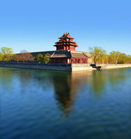
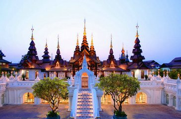

首页

京历史悠久，文化灿烂，是首批国家历史文化名城、
中国四大古都之一和世界上拥有世界文化遗产数最多的城市，
3060年的建城史孕育了故宫、天坛、八达岭长城、颐和园等众多名胜古迹。
早在七十万年前，北京周口店地区就出现了原始人群部落“北京人”。公元前1045年，
北京成为蓟、燕等诸侯国的都城。

泰国是佛教之邦，以其多变的景致及丰富的文化内涵，
成为许多旅游者度假计划中的独特选择。泰国在世界上素有“佛教之国”、“大象之国”、
“微笑之国”等称誉。泰国庙宇林立的千佛之国，信仰为上的微笑之国；拥有海岛、
美食和独特的文化，这是一个天生的旅游国度。泰国旅游，知名旅游项目，
以当地旅游环境为依托，以该城市丰富的自然和人文景观以及周到的服务
为吸引要素而发展起来的一种独特的旅游方式。在旅游行业占有重要的地位，
泰国旅游的城市为了发展旅游，提高城市竞争力，纷纷凸显特色。
消费大众化
旅游已经成为人民群众日常生活的重要组成部分，自助游，自驾游成为主要的出游方式。
需求品质化
人民群众对个性化、特色化旅游产品和服务的要求越来越高，旅游需求的品质化和中高端化趋势日益明显。
发展全域化
从“景点旅游”发展模式向“全域旅游”发展模式加速转变，旅游业与农业、林业、水利、工业、科技、文化、体育、健康医疗等产业深入融合。
产业现代化
科学技术、文化创意、经营管理和高端人才对推动旅游业发展的作用将日益增大。
竞争国际化
各国和地区普遍把旅游业作为参与国际市场分工、提升国际竞争力的重要手段，竞争领域从争夺客源市场拓展到旅游产业发展的各个方面。